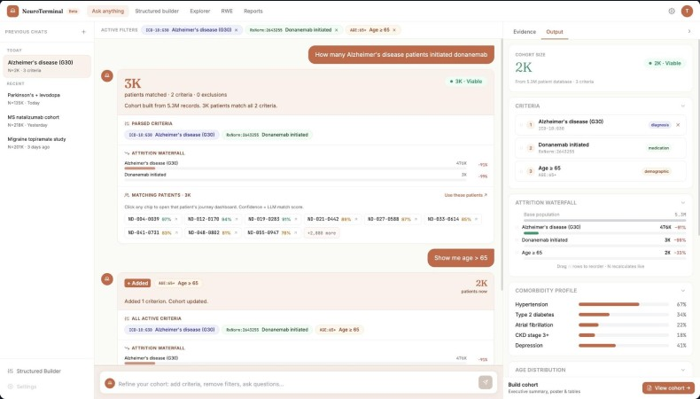

<!doctype html><html lang="en"><head><meta charset="utf-8"><meta name="viewport" content="width=device-width,initial-scale=1"><title>News · NeuroDiscovery AI</title>
<link href="https://fonts.googleapis.com/css2?family=Instrument+Sans:wght@400;500;600;700&display=swap" rel="stylesheet"><link rel="stylesheet" href="site.css"><script>(function(){var d=document.documentElement;function f(){var w=window.innerWidth;if(w>=1100){d.classList.add("fz");d.style.zoom=w<1920?String(w/1920):""}else{d.classList.remove("fz");d.style.zoom=""}}f();addEventListener("resize",f)})()</script></head>
<body data-page="newsd"><main id="page"></main><script src="site.js"></script><script src="news-data.js"></script><script>
const i=+(new URLSearchParams(location.search).get('i')||0),N=NEWS[i]||NEWS[0];
render([
['raw',{html:`<div class="hero short nd" style="background:#000 url(img/nd-hero.jpg) center/cover"><div class="wrap"><div class="crumbs"><a href="news.html">Announcements</a> &nbsp;/&nbsp; Neurology-First Platform</div><div class="date"><span>${N[3].toUpperCase()}</span><span>3 MIN READ</span></div><h1 style="font-size:clamp(28px,2.8vw,44px);line-height:1.12">${i?N[1]:'The new Neurology-First Platform to Accelerate Clinical Trial Recruitment, Real-World Evidence, and Therapy Adoption'}</h1></div></div>
<section style="padding-top:60px"><div class="wrap article"><div class="body">
<p><b>ALPHARETTA, Ga., May 19, 2026 /PRNewswire/ --</b> NeuroDiscovery AI today announced the launch of NeuroTerminal, its life sciences platform built specifically for neurology. NeuroTerminal brings together dedicated modules for clinical trials, real-world evidence, medical affairs and real-world data. It is designed to improve patient access to therapies for neurological disorders including Alzheimer’s disease, Parkinson’s disease, Migraine, Multiple sclerosis, Epilepsy, rare and ultra-rare neurological conditions.</p>

<p>Unlike generalized healthcare AI platforms, NeuroTerminal was purpose-built around the complexity and longitudinal nature of neurological disease progression. The platform combines real-world data, provider-embedded workflows, and NeuroLLM™, the company’s proprietary AI model, to analyze electronic health records, clinical notes, diagnostic histories, medications, lab results, cognitive assessments, ‘OMICS’ test results, imaging data, and treatment histories curated across more than 15 years of longitudinal neurology care.</p>
<p>The platform is powered by one of the largest neurology-focused real-world datasets in the United States, including:</p>
<ul><li><b>6+ million</b> de-identified longitudinal neurology patient journeys</li><li><b>3+ million</b> active clinical-trials-ready patients</li><li><b>100+ clinical sites</b> across 16 U.S. states</li><li>A network of <b>more than 1,000 neurologists</b> and advanced practice providers</li></ul>
<blockquote>“NeuroDiscovery AI was built alongside neurology providers, not in isolation. Neurology practices asked for better ways to understand and act on their own data, and NeuroDiscovery AI met that request. This provides a continuous feedback loop to refine the platform around the realities of clinical care and help change the trajectory of neurological disease.”<cite>Dr. Laszlo L. Mechtler,<small>board-certified neurologist and strategic advisor to NeuroDiscovery AI</small></cite></blockquote>
<p>Beyond clinical trial recruitment, the platform supports real-world data licensing, real-world evidence generation, provider engagement, implementation sciences, and commercialization support. NeuroDiscovery AI also helps reduce manual chart review burdens for providers while increasing the likelihood that patients are identified for relevant research opportunities and therapies.</p>
<p>The company is currently supporting collaborations across pharmaceutical sponsors, clinical research organizations, and neurology providers focused on accelerating research, improving trial efficiency, and expanding access to emerging therapies for neurodegenerative disease.</p>
<h3>About NeuroDiscovery AI</h3><p>NeuroDiscovery AI is a neurology-focused artificial intelligence company built to help improve the quality of care for patients diagnosed with neurological disorders. Through NeuroTerminal, its life sciences platform for neurology, the company helps pharmaceutical companies and clinical research organizations accelerate clinical trials, access real-world data, generate real-world evidence, support Implementation Sciences, and better understand therapy adoption. Powered by <b>NeuroLLM™</b>, NeuroDiscovery AI brings together longitudinal neurology data, provider-embedded workflows, and deep partnerships with U.S. neurology practices to turn real-world clinical data into actionable intelligence.</p>
<p style="border-top:1px solid var(--line);padding-top:20px;font-size:14px;color:#8b8d96">Source: <a href="#" style="color:var(--blue);text-decoration:underline">PR Newswire</a></p></div>
<aside class="side"><div class="q">"Clinical trial recruitment remains one of the largest bottlenecks in drug development, particularly in neurology where it can take many months to identify and screen the right patients. Our platform is able to reduce that timeline to mere weeks, which can mean earlier access to research opportunities and therapies that may improve a patient's quality of life."<b>Vamsi Chandra Kasivajjala</b><small>NeuroDiscovery AI</small></div>
<div class="all"><h6>All Announcements</h6>${NEWS.map((n,k)=>k==i?'':`<a href="news-detail.html?i=${k}"><span>${n[1]}</span><small>${n[3]}</small></a>`).join('')}</div></aside></div></section>`}],
['cta',{h:'Join the team building neurology\'s future',p:'We’re always looking for exceptional people who can help us reimagine neurology with AI and clinical data.'}]
]);
</script></body></html>
